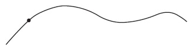
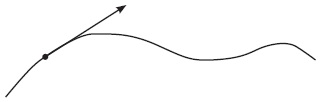
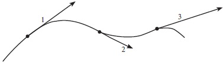
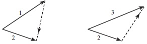
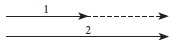
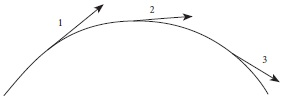
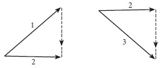
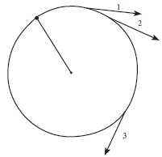
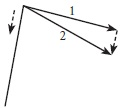
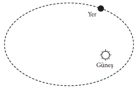

Yalnız doğru bir çizgi boyunca olan hareketle uğraştığımız sürece, doğada gözlenen hareketleri anlayamayız. Eğri çizgiler boyunca olan hareketleri de ele almalıyız. Ve şimdi yapacağımız iş, böyle hareketleri yöneten yasaları belirlemektedir. Bu, kolay bir görev değildir. Doğrusal hareket durumunda, hız, hız değişmesi ve kuvvet kavramlarımız, en yararlı kavramlardır. Ama onları eğri bir yol boyunca olan harekete nasıl uygulayabileceğimizi bilmiyoruz. Eski kavramların genel hareket tanımına elvermediği, yenilerinin yaratılması gerektiği bile düşünülebilir. Eski yolumuzu mu izlemeliyiz, yoksa yeni bir yol mu aramalıyız?
Bir kavramın genelleştirilmesi, bilimde sık sık başvurulan bir işlemdir. Genelleştirme için kesin bir yöntem belirlenmiş değildir; çünkü çoğu zaman bunu başarmanın pek çok yolu vardır. Bununla birlikte, şu gerek tam olarak yerine getirilmelidir: Genelleştirilmiş bir kavram, başlangıçtaki koşullar yerine getirilince, ilk kavrama indirgenmelidir.
Bunu şimdi üzerinde durduğumuz örnekle çok iyi açıklayabiliriz. Eski hız, hız değişmesi ve kuvvet kavramlarını, eğri bir yol boyunca olan hareket için kullanılabilecek biçimde genelleştirmeyi deneyebiliriz. Eğrilerden söz edince, bilimsel olarak, doğru çizgileri de onlara katarız. Doğru çizgi bir eğrinin özel ve yalınkat bir örneğidir. Bundan ötürü hız, hız değişmesi ve kuvvet, eğri bir çizgi boyunca olan hareket için kullanılırsa, doğru bir çizgi boyunca olan hareket için kendiliğinden kullanılır. Ama, bu sonuç, daha önce bulunan sonuçla çelişmemelidir. Eğri, doğru bir çizgi durumuna gelirse, bütün genelleştirilmiş kavramlar, doğrusal hareketi tanımlayan o bilinen kavramlara indirgenebilir. Ama bu sınırlandırma, genelleştirmeyi kesinlikle belirlemeye yetmez. Birçok olanağı açık bırakır. Bilim tarihi, en basit genelleştirmelerin bazen başarılı ve bazen başarısız olduğunu göstermektedir. Önce bir varsayımda bulunmalıyız. Bizim durumumuzda, genelleştirmenin doğru yöntemini kestirmek kolay bir iştir. Yeni kavramlar, gerçekten çok başarılıdır ve atılan bir taşın hareketini olduğu gibi, bir gezegenin hareketini de anlamamıza yardım etmektedir.
Şimdi, hız, hız değişmesi ve kuvvet, eğri bir çizgi boyunca olan hareketin genel durumunda ne anlama gelmektedir? Önce hızı ele alalım: Çok küçük bir cisim, şekildeki eğri boyunca, soldan sağa hareket ediyor. [Şekil-8] Böylesine küçük bir cisme, çoğu zaman, tanecik denir. Şeklimizdeki eğri üzerinde bulunan nokta, taneciğin herhangi bir andaki konumunu göstermektedir. Taneciğin o andaki ve o konumdaki hızı nedir? Galilei’nin verdiği ipucu, hızı bildirmenin

[Şekil-8]
yolunu gene gösteriyor. Hayal gücümüzü bir daha kullanmamız ve düşünselleştirilmiş bir deney üzerinde düşünmemiz gerekiyor. Tanecik, eğri boyunca, soldan sağa, dış kuvvetlerin etkisinde hareket ediyor. Nokta ile gösterilen belirli bir zamanda ve yerde, bütün bu kuvvetlerin etkisinin birdenbire dindiğini düşününüz. O zaman hareket, süredurum yasasına göre, bir-biçimli olmak zorundadır. Uygulamada, bir cismi bütün dış etkilerden elbette, asla kurtaramayız. Yalnızca “... olsaydı, ne olurdu?” diyerek olacağı kestirmeye çalışabiliriz. Ve oranlamamızdan (tahminimizden) çıkarılabilen sonuçlarla ve onların deneye uygunluğu ile, oranlamamızın doğru olup olmadığına karar verebiliriz.
Şekildeki vektör, bütün dış kuvvetlerin ortadan kalkması durumunda oranlanan yönü göstermektedir. [Şekil-9] Bu, teğet dediğimiz

[Şekil-9]
doğrunun yönüdür. Hareket eden bir taneciğe mikroskopla bakılınca, küçük bir çember parçası gibi gözüken çok küçük bir eğri kesimi görülür. Teğet, onun uzatımıdır. Onun için, çizilen vektör, belirli bir andaki hızı gösterir. Hız vektörü, teğetin üzerindedir. Ve onun uzunluğu, hızın büyüklüğünü ya da, örneğin, bir arabanın çabukluköl-çerinin gösterdiği çabukluğu temsil eder.
Hız vektörünü bulmak için, hareketi yok ettiğimiz düşünselleştirilmiş deneyimiz gerçek olarak alınmamalıdır. O, yalnızca hız vektörü dediğimiz şeyi anlamamıza yardım etmekte ve o vektörü belirli bir anda ve belirli bir noktada belirlememizi sağlamaktadır.
Şekilde, bir eğri boyunca hareket eden bir taneciğin üç farklı konumu için hız vektörleri gösteriliyor. [Şekil-10]

[Şekil-10]
Bu örnekte, yalnız yön değil, vektörün uzunluğu ile gösterilen hızın büyüklüğü de, hareket sırasında değişmektedir.
Bu yeni hız kavramı, bütün genellemeler için kesinlikle belirtilmiş olan gereği yerine getiriyor mu? Yani, bu kavram, eğri, bir doğru çizgi durumuna gelirse, bilinen kavrama indirgeniyor mu? Besbelli evet. Doğru bir çizgiye çizilen teğet, o çizginin kendisidir. Hız vektörü, tıpkı hareket eden el arabası ya da yuvarlanan küreler örneğinde olduğu gibi hareket çizgisi üzerinde bulunmaktadır.
Bundan sonraki adım, bir eğri boyunca hareket eden bir taneciğin hızındaki değişmenin ortaya konmasıdır. Bu da, en basitini ve en elverişlisini seçtiğimiz çeşitli yollardan yapılabilir. 10. şekil, yol boyunca çeşitli noktalardaki hareketi temsil eden ayrı ayrı hız vektörlerini gösteriyordu. Onların ilk ikisi, vektörlerde yapılabildiğini gördüğümüz gibi, ortak bir başlangıç noktaları olacak biçimde yeniden çizilebilir. [Şekil-11]

[Şekil-11]
Noktalı vektöre, hızdaki değişme diyoruz. Onun başlangıç noktası, ilk vektörün sonudur ve sonu, ikinci vektörün sonudur. Hız değişmesinin bu tanımı, ilk bakışta, düzmece ve anlamsız görülebilir. Ama yönleri aynı olan (1) ve (2) vektörlerinin özel durumunda [Şekil-12] çok daha anlaşılır olur.

[Şekil-12]
Bu, elbette, doğru-çizgi hareketindeki duruma geçmek anlamına gelir. Şekil, şimdi, şekil-6 ile özdeştir ve orada söz konusu edilen kavrama, yeni kavramın özel bir durumu olarak yeniden ulaşılmıştır. Şeklimizde iki çizgiyi ayırmak zorunda kaldık; çünkü, böyle yapmasaydık, çizgiler çakışır ve ayırt edilemezlerdi, diyebiliriz.
Şimdi genelleştirme işlemimizin son adımını atmamız gerekiyor. Bu, şimdiye dek bildirdiğimiz varsayımların en önemlisidir. Kuvvet ile hız değişmesi arasındaki bağlantı saptanmalıdır ki, böylelikle genel hareket problemini anlamamızı sağlayacak olan ipucunu formülleştirebilelim.
Doğru bir çizgi boyunca hareketin açıklanmasındaki ipucu basitti: Hızdaki değişmenin sorumlusu dış kuvvettir; kuvvet vektörünün yönü, değişmeninkinin aynıdır. Şimdi, eğri-çizgi hareketi için neyi ipucu saymalıdır? Tümüyle aynı şeyi! Biricik fark, hız değişmesinin şimdi öncekinden daha geniş bir anlam olmasıdır. Son iki şekildeki noktalı vektörlere bir göz atmak, bu noktayı açıkça anlamaya yeter. Hız, eğri boyunca bütün noktalar için bilinirse, kuvvetin her noktadaki yönü anlaşılıverir. Çok kısa bir zaman aralığı ile birbirinden ayrılan ve bundan dolayı, birbirine çok yakın bulunan konumlara karşılık olan iki an için hız vektörleri çizilmelidir. Birincinin bitim noktasından ikincininkine çizilen vektör, etki yapan kuvvetin yönünü gösterir. Ancak, iki hız vektörünün yalnız “çok kısa” bir zaman aralığı ile birbirinden ayrılmış olması gereklidir. “Çok yakın”, “çok kısa” gibi kavramların kesinlikle belirlenmesi hiç de kolay değildir. Newton ve Leibniz, bunu başarmaya çalışırken, diferansiyel (farksal) hesabı bulmuşlardı.
Bu Galilei’nin ipucunun genelleştirilmesine çıkan yorucu ve dolambaçlı bir yoldur. Galilei’nin ipucunun bu genelleştirilmesinden doğan sonuçların ne kadar çok ve verimli olduğunu burada gösteremeyiz. Bu ipucunun izlenmesi, eskiden tutarsız ve yanlış anlaşılmış birçok olgunun basit ve inandırıcı açıklamalarına yol açar.
Son derece zengin olan hareket çeşitlerinden yalnız en basit olanları alıp, demin formülleştirdiğimiz yasayı onların açıklamalarına uygulayacağız.
Bir tüfeğin namlusundan çıkan kurşun, eğik atılan bir taş, bir hortumdan fışkıran su, hepsi, aynı çeşit yollar, paraboller izler. [Şekil-13] Örneğin, bir taşa bir çabuklukölçer iliştirildiğini düşününüz; öyle ki, taşın hız vektörü her an için çizilebilsin. Sonuç, şekilde gösterildiği gibi olabilir. Taşı etkileyen kuvvetin yönü, hız değişmesininkinin

[Şekil-13]
tümüyle aynıdır. Ve biz, bunun nasıl belirlenebildiğini gördük. Şekilde gösterilen sonuç, kuvvetin düşey olduğunu ve aşağı doğru yöneldiğini belirtmektedir. [Şekil-14] Bu, kuleden aşağı bir taş bırakıldığı zamanki kuvvetin tümüyle aynıdır. İzlenen yollar, büsbütün farklıdır, hızlar da öyledir, ama hızdaki değişmenin yönü aynıdır, yani Yer’in merkezine doğrudur.

[Şekil-14]
Bir ipin ucuna bağlanan ve yatay bir düzlemde döndürülen bir taş, bir çember üzerinde hareket eder. [Şekil-15]

[Şekil-15]
Çabukluk bir-biçimli ise, bu hareketi diyagramda temsil eden bütün vektörlerin uzunlukları eşittir. Bununla birlikte, hız bir-biçimli değildir; çünkü yol doğru bir çizgi değildir. Ancak bir-biçimli ve doğrusal harekette işe karışan hiçbir kuvvet yoktur. Oysa burada etkili olan kuvvetler vardır ve hızın büyüklüğü değişmiyorsa da, yönü değişmektedir. Hareket yasasına göre, bu değişmeden sorumlu bir kuvvet, bu örnekte taş ile ipi tutan el arasında bir kuvvet, olmalıdır. Burada şu soru ile karşılaşıyoruz: Kuvvet hangi yönde etki yapmaktadır? Yanıtı gene bir vektör diyagramı göstermektedir. Çok yakın iki nokta için hız diyagramları çizilir ve hız değişmesi bulunur. [Şekil-16] Bu son vektörün, taşın bağlı olduğu ip boyunca çemberin merkezine doğru yöneldiği ve hız vektörüne ya da teğete her zaman dik olduğu görülür. Başka bir söyleyişle, el, ipin aracılığı ile taşa bir kuvvet uygulamaktadır.

[Şekil-16]
Ay’ın Yer çevresinde dönmesi daha önemli bir örnektir ve buna çok benzer. Bu, aşağı yukarı bir-biçimli çembersel hareket olarak gösterilebilir. Kuvvet, bundan önceki örneğimizde neden ele doğru yönelmişse, gene ondan dolayı Yer’e yönelmiştir. Yer’i Ay’a bağlayan bir ip yoktur, ama bu iki gök cisminin merkezlerini birleştiren bir çizgi düşünebiliriz; kuvvet bu çizgi boyuncadır, tıpkı havaya atılan ya da kuleden bırakılan bir taşı etkileyen kuvvet gibi, Yer’in merkezine doğru yönelmiştir.
Hareket konusunda şimdiye dek söylediklerimizin hepsi, bir tek tümce ile özetlenebilir. Kuvvet ve hız değişmesi, yönleri aynı olan vektörlerdir. Bu, hareket problemimizin çözümü için birinci ipucudur, ama gözlenen bütün hareketlerin eksiksiz bir açıklamasını yapmak için elbette yeterli değildir. Aristoteles’in düşünce çizgisinden Galilei’ninkine geçiş, bilimin temelinde pek önemli bir köşe taşı olmuştur. Bu adım bir kez atılınca, daha sonraki gelişim çizgisi belliydi. Burada, gelişimin aşamaları ile, ilk ipuçlarının izlenmesi ile, yeni fiziksel kavramların nasıl eski düşüncelerle uğraşılarak ve didinilerek doğduğunun gösterilmesi ile ilgilenmiyoruz. Biz, yalnız, gelişimin yeni ve beklenmedik yollarını bulmaktan oluşan bilimsel öncü çalışma ile; evrenin durmadan değişen bir tablosunu yaratan bilimsel düşüncenin serüvenleri ile ilgileniyoruz. İlk ve köklü girişimler, her zaman devrimci karakterdedir. Bilimsel düşünce, eski kavramları aşırı dar bulur ve onların yerine yenilerini koyar. Şimdilik yürünmüş olan yollardaki sürekli ilerleme, gelecek yol ayrımına ulaşılıp gene daha yeni bir alanın tanınması gerekinceye dek, daha çok evrim niteliğindedir. Bununla birlikte, önemli kavramlarda bir değişikliği zorunlu kılan gerekçelerin ve güçlüklerin neler olduğunu anlamak için, yalnız ilk ipuçlarını değil, onlardan çıkarılabilen sonuçları da bilmeliyiz.
Çağdaş fiziğin en önemli ayırıcı özelliklerinden biri, ilk ipuçlarından çıkarılan sonuçların yalnızca nitel olmayıp nicel de olmasıdır. Gene kuleden aşağı bırakılan taşı düşünelim. Taş düştükçe hızının arttığını biliyoruz, ama daha çok bilgi edinmek isteriz. Bu değişme ne kadardır? Ve taş düşmeye başladıktan sonra, herhangi bir andaki konumu ve hızı nedir? Olayları öngörebilmek ve gözlemin bu öngörüleri ve dolayısıyla ilk varsayımları doğrulayıp doğrulamadığını saptamak isteriz.
Nicel sonuçlar çıkarmak için matematik dilini kullanmamız gerekir. Bilimin temel düşüncelerinden pek çoğu, aslında basittir ve bir kural olarak, herkesin anlayabileceği bir dille anlatılabilir. Bu düşünceleri izlemek, büyük ölçüde bir araştırma tekniğinin bilinmesini gerektirir. Deneyle karşılaştırılabilecek sonuçlar çıkarmak istersek, matematik, bir düşünme aracı olarak gereklidir. Yalnız temel fiziksel düşüncelerle ilgilendiğimiz sürece, matematik dilini kullanmayabiliriz. Bizim bu sayfalarda yaptığımız hep bu olduğundan, arada bir, daha sonraki gelişim sırasında ortaya çıkan önemli ipuçlarının anlaşılması için gerekli sonuçların bazılarını, kanıt göstermeksizin aktarmak zorundayız. Matematik dilini bırakmanın karşılığı, kesinlikle bir yitiktir ve bazen sonuçları, nasıl ulaşıldıklarını göstermeden aktarmaktır.
Hareketin çok önemli bir örneği, Yer’in Güneş çevresindeki hareketidir. Yörüngenin elips denen kapalı bir eğri olduğu bilinmektedir. [Şekil-17] Hız vektörünün diyagramını çizersek, Yer’i etkileyen kuvvetin Güneş’e doğru yöneldiğini görürüz. Ama bu, gene de pek önemsiz bir bilgidir. Dilediğimiz herhangi bir an için Yer’in ve öbür gezegenlerin konumunu önceden kestirebilmek isterdik, gelecek güneş tutulmasının zamanını ve süresini ve başka birçok gökbilimsel

[Şekil-17]
(astronomical) olguyu önceden bilmek isterdik. Bunlar yapılabilir ama, yalnız ilk ipucumuza dayanılarak yapılamaz; çünkü artık kuvvetin yalnız yönünü değil, kesin değerini, büyüklüğünü de bilmek gereklidir. Bu noktadaki dahice varsayım Newton’undur. Newton’un gravitation[4] yasasına göre, iki cisim arasındaki çekim kuvveti, onların birbirinden olan uzaklıklarına basit bir biçimde bağlıdır. Bu uzaklık arttıkça, kuvvet azalır. Kesin olarak, uzaklık iki katına çıkarsa, kuvvet 2x2=4 kat azalır; uzaklık üç katına çıkarsa, kuvvet 3x3=9 kat daha az olur.
Demek ki, gravitational kuvvet durumunda, kuvvetin hareket eden iki cisim arasındaki uzaklığa bağımlı olduğunu basit bir biçimde anlatmayı başardık. Çeşitli kuvvetlerin, örneğin elektrik kuvvetinin, magnetik kuvvetin, vb.’nin etkili olduğu bütün öbür durumlarda da böyle yapıyoruz. Kuvvet için basit bir anlatım kullanmaya çalışıyoruz. Ama böyle bir anlatım, ancak ondan çıkan sonuçlar deneyle doğrulanınca onaylanır.
Ama yalnız gravitational kuvveti bilmek, gezegenlerin hareketini tanımlamak için yeterli değildir. Herhangi bir kısa zaman aralığı için kuvveti ve hızdaki değişmeyi temsil eden vektörlerin aynı yönlü olduğunu gördük ama, Newton’u izleyerek bir adım daha atmalı ve onların uzunlukları arasında basit bir ilişki (relation) varsaymalıyız. Öbür koşulların hepsi aynı olsa, yani, aynı hareketli cisim ve eşit zaman aralıklarında aynı değişmeler söz konusu olsa, o zaman, Newton’a göre, hız değişmesi kuvvetle orantılıdır.
Demek ki, gezegenlerin hareketi konusundaki nicel sonuçlar için, birbirini tümleyen yalnız iki varsayım gereklidir. Biri genel karakterdedir ve kuvvet ile hız değişmesi arasındaki bağlantıyı saptar. Öbürü özeldir ve söz konusu kuvvetin cisimler arasındaki uzaklığa kesin bağımlılığını saptar. Birincisi Newton’un genel hareket yasasıdır, ikincisi Newton’un gravitation yasasıdır. İkisi birlikte hareketi belirler. Bu, aşağıdaki biraz kaba düşünme yolu ile aydınlatılabilir. Bir gezegenin konumunun ve hızının belirli bir zamanda saptanabildiğini ve kuvvetin bilindiğini varsayınız. O zaman, Newton’un yasalarına göre, kısa bir zaman aralığındaki hız değişmesini biliriz. Başlangıçtaki hız ve değişmesi bilinirse, gezegenin o zaman aralığının sonundaki hızını ve konumunu bulabiliriz. Bu işlemi durmadan yinelersek, artık gözlem verilerine başvurmadan, hareketin bütün yörüngesini izleyebiliriz. Bu, aslında, mekaniğin hareket eden bir cismin yolunu önceden bildirmek için kullandığı yöntemdir, ama burada başvurulan yöntem pek kullanışlı değildir. Uygulamada, böyle adım adım yürütülen bir işlem, aşırı sıkıcı ve kusurlu olurdu. Neyse ki, bu işlem tümüyle gereksizdir; matematik kısa bir yol sağlamakta ve bizim bir tek tümceyi yazmak için kullandığımızdan daha az mürekkep harcayarak hareketi kesinlikle tanımlamamızı sağlamaktadır. Bu yoldan varılan sonuçlar, gözlemle ya doğrulanır ya da yanlış oldukları gösterilir.
Düşen bir taşın hareketinde ve Ay’ın yörüngesinde dolanmasında aynı dış kuvvet çeşidinin, yani, Yer’in maddesel cisimleri çekme kuvvetinin bulunduğu görülüyor. Newton, bütün düşen taşların, Ay’ın ve gezegenlerin hareketlerinin, herhangi iki cisim arasında etkili olan evrensel bir gravitational kuvvetin yalnızca çok özel görünümleri olduğunu tanımıştır. Hareket, basit durumlarda matematiğin yardımı ile tanımlanabilir ve önceden bilinebilir. Birçok cismin birbirini etkilediği aşırı karmaşık ve pek seyrek rastlanan durumlarda, matematiksel bir tanım yapmak pek kolay değildir, ama temel ilke aynıdır.
Atılan bir taşın hareketinde, Ay’ın hareketinde, Yer’in ve gezegenlerin hareketinde yakaladığımız ilk ipuçlarını izleyerek vardığımız sonuçları gördük.
Gerçekte deneyle doğrulanan ya da yanlış olduğu gösterilen, bizim varsayımlar sistemimizin tümüdür. Varsayımların hiçbiri, öbürlerinden ayrılıp tek başına sınanamaz. Güneş’in çevresinde dolanan gezegenler örneğinde, mekanik sistemimiz çok güzel işlemektedir. Bununla birlikte, başka varsayımlara dayanan başka bir sistemin de bu kadar güzel işleyebileceğini pekâlâ düşünebiliriz.
Fiziksel kavramlar, insan aklının bağımsız yaratılarıdır (creation), ve dış âlemin eşsiz bir biçimde belirlediği şeyler gibi görünürlerse de, öyle değillerdir. Gerçekliği anlamaya çabalarken, biraz da kapalı bir saatin işleyişini anlamaya uğraşan bir adama benzeriz. Adam, saatin kadranını, akrebin ve yelkovanın hareketini görmekte, saatin tiktaklarını bile işitmektedir, ama saati açmaktan başka çaresi yoktur. Zeki bir kimse ise, gözlediği bütün şeylerden sorumlu olabilecek bir mekanizma tasarlayabilir, ama kendi tasarladığı mekanizmanın, gözlemlerini açıklayabilecek biricik mekanizma olduğuna gerçekten hiç güvenemez. Kendi tasarladığı mekanizmayı gerçek mekanizma ile hiçbir zaman karşılaştıramayacaktır ve böyle bir karşılaştırmanın olanağını ya da anlamını bile düşünemeyecektir. Ama bilgisi arttıkça, kendi gerçeklik tasarımının gittikçe basitleşeceğine ve duyumsal izlenimlerinin gittikçe genişleyen bir kesimini açıklayacağına kesinlikle inanır. Bilginin erişilmez (ideal) bir sınırı olduğuna ve insan aklının o sınıra gittikçe daha çok yaklaştığına da inanabilir. O erişilmez sınıra nesnel gerçeklik diyebilir.